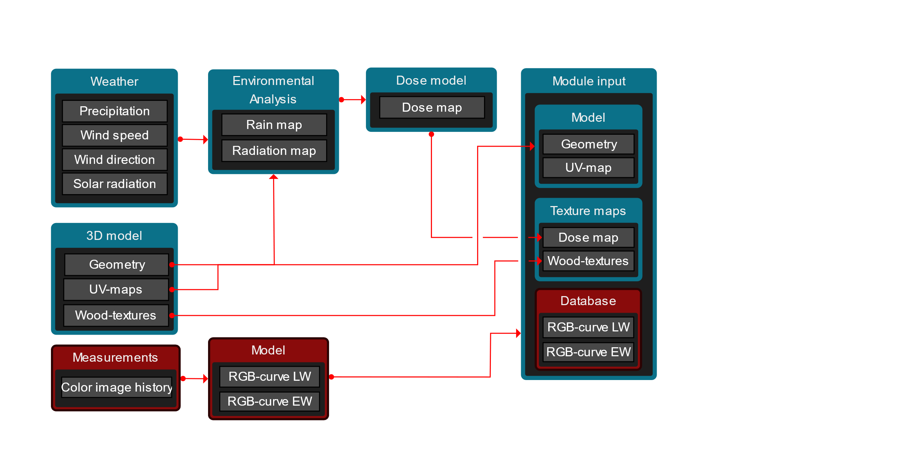
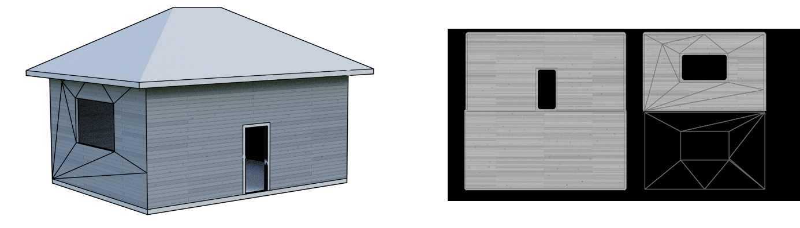
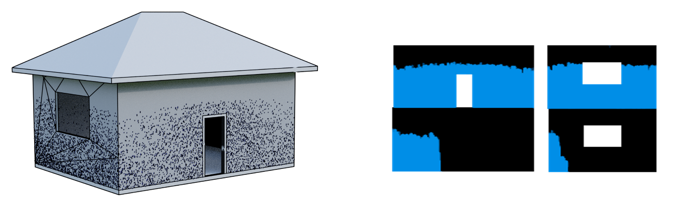
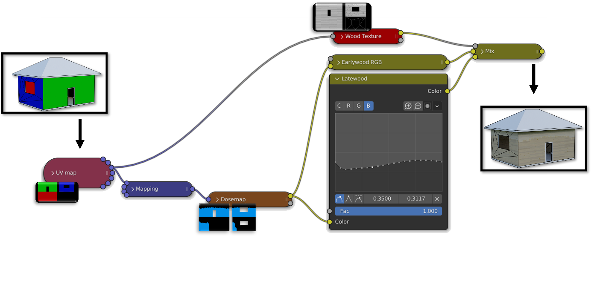
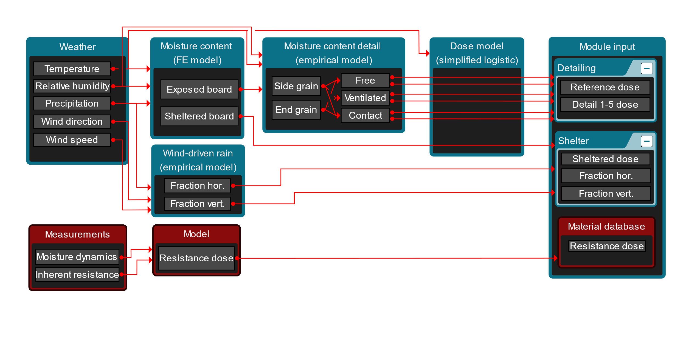

Figure 1.
Figure 1 shows the concept used to simulate appearance changes of wood caused by environmental effects. The kinetic and/or intensity of such changes depends on structure and architectural design (3D model), location (weather), microclimate (environmental analysis), and the materials used for construction (measurements and database). The relationship linking the various factors to kinetics is the dose model. The dose model returns the degree of discoloration in different nodes on the building envelope and the material database holds species-specific relationships between colour and degree of discoloration.
In this section, Blender will be used to demonstrate the basic components and procedures involved in deriving a dose map from a geometry and environmental analysis. Blender is an open-source software for 3D modelling. Some of the basic features include rendering, creating objects, materials, animations, and scripting. For the sake of this report, we will focus on a subset of general functions, including the general components like the objects, materials, texture-mapping. In addition, we will use some Blender-specific concepts such as particle effects, dynamic paint and animations which can be used for environmental analysis in lieu of more advanced computational fluid dynamics (CFD) simulations. In cases where accuracy is important, then it is recommended to perform the environmental analysis in a software dedicated to numerical simulation and computational fluid dynamics.
Geometry is information describing the position of vertices and how they connect to form lines and faces and objects. A vertex is a single point in space, defined by its x, y and z-coordinate. Two vertices can be joined to a line, and a minimum of three lines can be joined to a face (surface). An object can consist of multiple surfaces. For example, a box is made up of 8 vertices, 12 lines and 6 faces. A 3D model can include multiple objects. Figure 1a shows a basic 3d model.
The material determine how object surfaces will be rendered. Real materials are often visualized by projecting an image of a real material onto the surface of the object. To project a flat image to an object consisting of several surfaces facing in different directions (normal), then the object needs to be unwrapped, or unfolded, onto a 2D plane. This process is called UV-mapping. Figure 1b shows the unwrapped surfaces of the basic 3D model. A flat texture can then be mapped to match the UV-map, whereafter the 3D-shape is reassembled.
Figure 2. A basic 3D geometry (left) with its wall-surfaces unwrapped onto a flat surface (right).
As an alternative to image textures, procedural material textures can be generated from algorithms. Like vector-based graphics, procedural textures are defined by mathematics and the resolution is only limited by the resulting rendered image. Procedural textures are difficult to transfer between different computer software. To solve this, a procedural texture can be pre-rendered and mapped from the object onto a 2D texture image prior to transfer. Figure 2a shows a 3D model with grayscale procedural textures and Figure 2b shows the same textures rendered as a texture image. After pre-rendering, the object can easily be reassembled in a different software from its geometry, the rendered image, and the texture coordinates. The infinite resolution of the procedural texture is however lost in the process.

Figure 3. A 3d model with procedural wood textures (left) with the textures projected and baked onto a 3D texture image (right).
Weather variables contributing to surface deterioration, mainly wind-driven rain and direct solar radiation, should be simulated in an environmental analysis and mapped a to an image which can then be processed and projected onto the 3D-model. In the CLICKdesign project, several different approaches have been used for environmental analysis. In cases where accuracy is important it is recommended to perform the environmental analysis in a software dedicated to numerical simulation and computational fluid dynamics. However, reduced computational time can be obtained by modelling precipitation through raytracing or particle simulations. Figure 3 shows a particle simulation based on the Blender native physics engine and the corresponding map showing the exposed surfaces of the building.
 Figure 4. Particle simulation to emulate driving rain and their distribution on the wall surface (left) and the resulting image textures showing surfaces exposed to (black) and sheltered from precipitation (blue). |
|---|
The results from the environmental analysis are used as input to a dose model to estimate the degree of discoloration in different nodes on the building envelope. The model used to translate precipitation, radiation and other effects to deterioration is called a dose model. Unfortunately, a working dose model is yet to be developed. Therefore, a CLICKdesign has used various simple criteria in lieu of an actual dose model. For a simplified analysis, it can be assumed that any surface which is exposed to both precipitation and solar radiation eventually becomes fully weathered. This does not take into consideration the kinetics of the degradation process but is still useful for modelling a possible final state. Another approach is to assume that weathering is proportional to the exposure to precipitation. Figure X shows an example where the intensity of the dose map (max intensity is shown as white) is proportional to the exposure to precipitation where precipitation has been modelled through computational fluid dynamics.
The material database is based on an experiment where 120 different materials were exposed outdoors over a period of two years. The measurements include a series of monthly digital images taken outside during the natural weathering experiment. More information on the experimental setup can be found in the literature1
The images were post-processed to correct for variations in lightning among other factors. Bands of latewood and earlywood, respectively, were then identified. The exact algorithm is yet to be disclosed as part of a scientific publication; however, the output includes the temporal variations of colour as monthly RGB-values for latewood and earlywood, respectively. As such, every species is represented by a 24x6 array. This array can then be interpolated in two dimensions to get a continuous function where the colour is described by the duration of weathering and the ratio of latewood/earlywood.
Figure 5. Interpolated function describing the color change over time of one species.
Figure 6 shows, conceptually, the process for visualizing weathering from a 3D-model (geometry and UV-map), dosemap, texture map, and species-specific RGB-curves. In short, the colours are mapped to the geometry by taking the pixel intensity from the dosemap (0-1), finding the corresponding RGB-values of latewood and earlywood, respectively, and then mixing the two colors with weights based on the pixel intensity of the wood texture map (0-1). It should be noted that the kinetics derived from the database are related to the exposure conditions at the site where the experiment was conducted. The rate of discoloration should thus be scaled before application under different weather conditions. However, this process involves the use of a dose model, which is still under development.
In the CLICKdesign web-based tool, the model and wood texture are included in binary format (.glb). The dose map is stored as an image, either .png or .jpg. The database is stored in JSON-format.

Figure 6. Conceptual illustration of the process for visualizing weathering from the module inputs.

Reference to JN forests paper and meteonorm manual
Reference to Philip paper on mapping
Reference to JN paper on detailing the
Reference to JN forests paper and clear statement about SLM model
Explanation of empirical WDR coefficient and short explanation of the assumptions (rain exposure is used as weight)
Christian Part forests papers
Meyer-Veltrup model + Christian part I/II Forests papers
Reference to Kuba & Annas book chapter↩︎